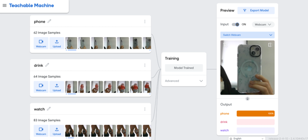
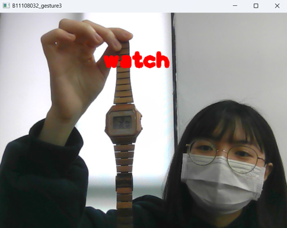
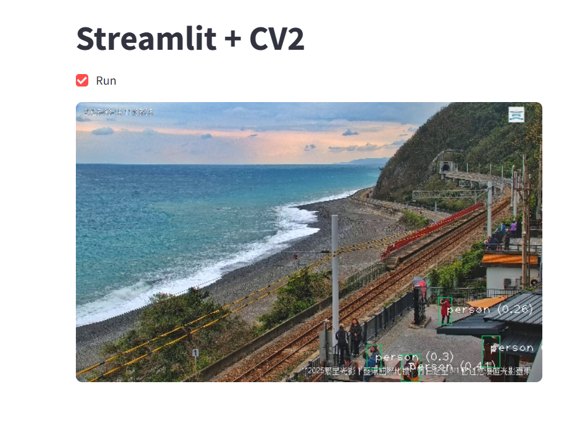
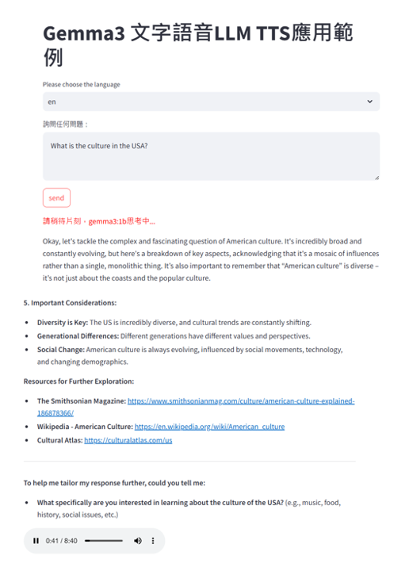
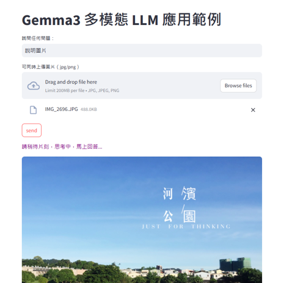

📸 Teachable Machine 模型展示
透過瀏覽器就能訓練影像分類模型，並即時應用於鏡頭辨識。

👉 訓練後的模型可直接應用於實體辨識，簡單直覺。

▶️ Teachable Machine 程式碼展示
import tensorflow as tf
import cv2
import numpy as np
model = tf.keras.models.load_model('models/keras_model.h5', compile=False)
data = np.ndarray(shape=(1, 224, 224, 3), dtype=np.float32)
cap = cv2.VideoCapture(0)
while cap.isOpened():
success, image = cap.read()
img = cv2.resize(image , (224, 224))
img = cv2.cvtColor(img, cv2.COLOR_BGR2RGB)
image = cv2.flip(image, 1)
image_array = np.asarray(img)
normalized_image_array = (image_array.astype(np.float32) / 127.0) - 1
data[0] = normalized_image_array
prediction = model.predict(data)
a,b,c,d = prediction[0]
if a>0.5:
print('phone')
cv2.putText(image, 'phone', (30, 120), 1, 3, (255,0,255), 10, 1)
if b>0.5:
print('drink')
cv2.putText(image, 'drink', (130, 120), 1, 3, (255,0,0), 10, 1)
if c>0.5:
print('watch')
cv2.putText(image, 'watch', (230, 120), 1, 3, (0,0,255), 10, 1)
cv2.imshow('B11108032_gesture3', image)
if cv2.waitKey(500) & 0xFF == 27:
break
cap.release()🖥️ Streamlit 展示平台
利用 Streamlit 快速建立模型操作介面，讓使用者與 AI 即時互動。

🎯 使用者可輸入內容、上傳圖片或選擇選項，即可觸發模型推論。
▶️ Streamlit YouTube 物件辨識程式碼
base_options = mp.tasks.BaseOptions('models/efficientdet_lite0.tflite')
options = mp.tasks.vision.ObjectDetectorOptions(base_options, score_threshold=0.2)
detector = mp.tasks.vision.ObjectDetector.create_from_options(options)
video_url = "https://www.youtube.com/watch?v=UCG1aXVO8H8"
ydl_opts = {'format': 'best', 'quiet': True }
with yt_dlp.YoutubeDL(ydl_opts) as ydl:
info_dict = ydl.extract_info(video_url, download=False)
stream_url = info_dict['url']
cap = cv2.VideoCapture(stream_url)
st.title('Streamlit + CV2')
run = st.checkbox('Run')
FRAME_WINDOW = st.image([])
while run:
success, image = cap.read()
image = cv2.resize(image, (600, 360))
image_mp = mp.Image(mp.ImageFormat.SRGB, image)
detection_result = detector.detect(image_mp)
for detection in detection_result.detections:
bbox = detection.bounding_box
cv2.rectangle(image, (bbox.origin_x, bbox.origin_y),
(bbox.origin_x + bbox.width, bbox.origin_y + bbox.height), (100, 200, 0), 1)
category = detection.categories[0]
result_text = category.category_name + ' (' + str(round(category.score, 2)) + ')'
cv2.putText(image, result_text, (10 + bbox.origin_x, 20 + bbox.origin_y),
1, 1, (255, 255, 255), 1)
FRAME_WINDOW.image(image, channels='BGR')
cap.release()🧠 Local LLM 在地大腦
不需連網即可執行語言模型，支援語音、文字與圖像理解。

🗣️ 可將語音轉為文字，並用本地 LLM 回覆你的問題。
▶️ Local LLM 語音轉文字 + 回覆 TTS
# streamlit run AI11_llm2.py
import streamlit as st
import ollama
from gtts.lang import tts_langs
from gtts import gTTS
import base64
from tempfile import NamedTemporaryFile
langs = tts_langs().keys()
st.title("Gemma3 文字語音LLM TTS應用範例")
lang = st.selectbox("Please choose the language", options=langs, index=12)
user_input = st.text_area("詢問任何問題：", "")
if st.button("send"):
if user_input:
st.markdown("請稍待片刻，gemma3:1b思考中...", unsafe_allow_html=True)
response = ollama.chat(model='gemma3:1b', messages=[{'role': 'user', 'content': user_input}])
st.write(response['message']['content'])
tts = gTTS(response['message']['content'], lang=lang, slow=False, lang_check=True)
with NamedTemporaryFile(suffix=".mp3", delete=False) as temp:
tts.save(temp.name)
with open(temp.name, "rb") as f:
data = f.read()
b64 = base64.b64encode(data).decode()
md = f""""""
st.markdown(md, unsafe_allow_html=True)
else:
st.warning("PLease type in your question!")

📷 本地模型也能理解圖片內容並進行說明或回答。
▶️ Local LLM 圖片輔助理解（多模態）
import streamlit as st
import ollama
import random
st.title("Gemma3 多模態 LLM 應用範例")
colors = ['red', 'blue', 'green', 'orange', 'purple']
user_input = st.text_input("詢問任何問題：", "")
uploaded_image = st.file_uploader("可同時上傳圖片（jpg/png）", type=["jpg", "jpeg", "png"])
if st.button("send"):
if user_input or uploaded_image:
st.markdown(f"請稍待片刻，思考中，馬上回答...", unsafe_allow_html=True)
messages = []
if uploaded_image:
st.image(uploaded_image, caption="上傳的圖片如上，請等待判讀結果...", use_container_width=True)
image_bytes = uploaded_image.getvalue()
messages.append({'role': 'user', 'content': user_input, 'images': [image_bytes]})
else:
messages.append({'role': 'user', 'content': user_input})
response = ollama.chat(model='gemma3:4b', messages=messages)
st.write(response['message']['content'])
else:
st.warning("請輸入prompt或上傳圖片！")